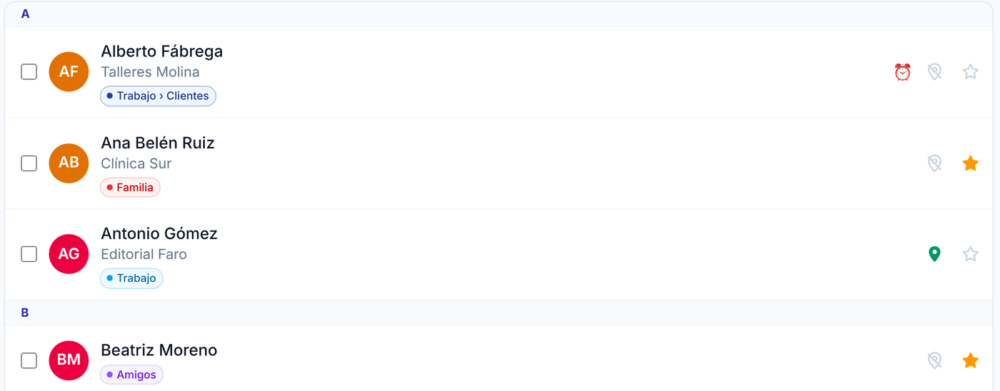
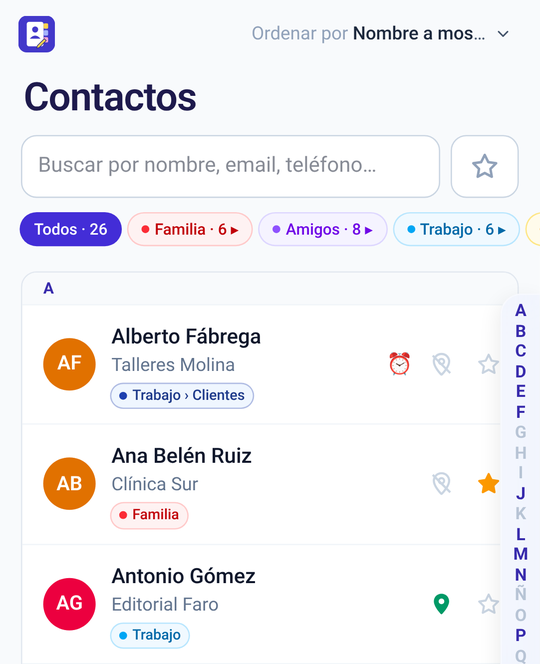

14Novedades de la versión 1.4.1
La 1.4.1 es una versión pequeña: permite marcar los favoritos directamente desde la lista de contactos, sin abrir la ficha.
Favoritos desde la lista
- Al final de cada fila de la lista de contactos hay una estrella: rellena (amarilla) si el contacto es favorito y vacía (solo el contorno) si no lo es.
- Tócala para marcarlo o desmarcarlo. Se guarda al momento y no abre la ficha; para abrirla, toca el nombre como siempre.
- Con la estrella del buscador activada (solo favoritos), al quitar la estrella de un contacto desaparece de la lista.
- En la app, la selección rápida sigue igual: mantener pulsada la foto marca varios contactos; la estrella es aparte.
- Sin conexión, el cambio se guarda en el móvil y se envía al servidor cuando vuelve la conexión.
- Como siempre, los favoritos son personales y viajan a Gmail (Destacados), a Fastmail, al móvil y a los .vcf (categoría «Favoritos»).

La lista en el ordenador: estrella al final de cada contacto.

En la app, la estrella queda a la derecha de cada fila.
Cómo actualizar. Instala el zip con bash /opt/actualizar-agendario.sh. En la web se ve al recargar; en el móvil hace falta la APK 1.4.1 (la anterior sigue funcionando con este servidor, pero sin la estrella en la lista).
La web de Agendario (dagarin.es/agendario) estrena capturas con las pestañas de Regalos y una entrada nueva en la galería, «Recibidos».